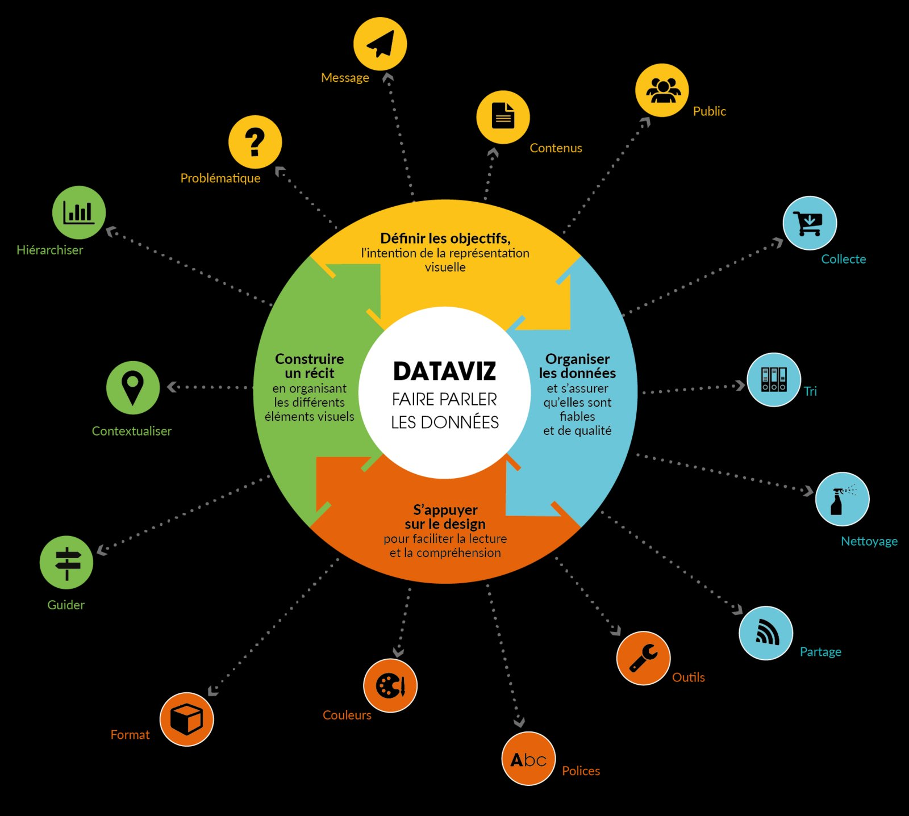

Datavisualisation — Challenge National Power BI

🔍 AgrandirCadre du projet & Objectifs
Participation au challenge national de datavisualisation BUT SD sur les données de chômage par tranche d'âge et par région en France. Produire un dashboard Power BI percutant et analytiquement rigoureux.
Étapes de réalisation
Préparation des données
Nettoyage sous Power Query : doublons, pivotement des tables, valeurs manquantes.
Conception du dashboard
Visualisations Power BI : barres groupées par région, courbes temporelles, cartes géographiques, filtres interactifs.
Storytelling analytique
Organisation narrative guidant le lecteur des grandes tendances nationales vers les détails régionaux et démographiques.
Ce que j'en retire
Un dashboard n'est pas un rapport
Un décideur ne lit pas tout, il scanne. Chaque visuel doit se comprendre en 5 secondes, sans légende complexe.
💡 Ce que j'ai retenu
Trop d'indicateurs sur un même écran = zéro indicateur retenu. Choisir les bons KPIs est aussi difficile que les calculer.
Ce que ça m'apporte en entreprise
Power BI est l'outil de reporting le plus demandé dans les offres d'emploi data. Un dashboard bien construit permet à des managers non-techniques de prendre des décisions en quelques secondes sans passer par une équipe BI. Cette SAÉ démontre une capacité à créer des visualisations décisionnelles orientées utilisateur final.
Positionnement par rapport aux ACs
| Apprentissage Critique | Statut | Commentaires |
|---|---|---|
| AC13.03 Mesurer l'importance de mettre en évidence des résultats clés par des indicateurs pertinents |
A | 4 KPIs principaux structurant le dashboard, chacun répondant à une question décisionnelle précise. |
| AC13.05 Comprendre les intérêts de la data visualisation et de l'infographie |
A | Dashboard Power BI avec un fil conducteur narratif clair et des visuels adaptés aux types de données. |
| AC12.04 Comprendre l'intérêt des synthèses pour mettre en évidence des liaisons entre variables |
P | Corrélations régionales identifiées et visualisées, interprétation causale à nuancer davantage. |